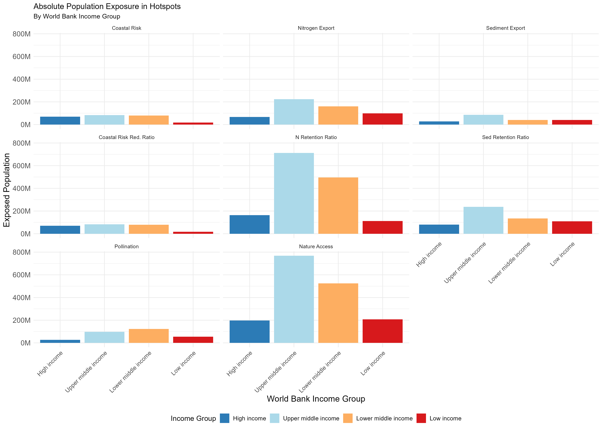

Global Ecosystem Service Hotspots: A Spatiotemporal Analysis of Change, Exposure, and Attribution
Collaborative Draft for Advisor Feedback
1 Abstract
Ecosystem services are declining globally, but the spatial concentration, affected populations, and underlying mechanisms remain poorly understood. We analyze overarching regional trajectories and localized changes in eight ecosystem services across 1.7 million 100 sq km equal-area grid cells worldwide between 1992 and 2020 integrating biophysical models (InVEST), satellite data (ESA CCI land cover), and socioeconomic covariates. We identify approximately 250,000 unique grid cells experiencing at least one ecosystem service hotspot (defined as the extreme 5% of relative change values, calculated via Symmetric Percentage Change, per service) and find: (1) geographic clustering predominantly in Latin America and East Asia; (2) differential exposure across income groups and land-use contexts, with lower-middle income regions experiencing ~1.6× higher hotspot intensity than high-income nations; and (3) attribution complexity where ~76% of hotspots show limited overlap with detected land cover conversion, suggesting in-situ degradation may vastly exceed conversion in driving service decline. These findings highlight the need for targeted conservation strategies that account for geographic concentration, socioeconomic vulnerability, and region-specific management drivers.
Keywords: Ecosystem services, hotspots, land-use change, socioeconomic profiling, global assessment
2 Introduction
2.0.1 Ecosystem Services at Risk
Ecosystem services—the benefits humans derive from nature—are fundamental to human wellbeing. Yet services including pollination, water purification, coastal protection, and biodiversity support are declining globally due to land-use change, climate variation, and ecosystem degradation (Millennium Ecosystem Assessment, 2005; IPBES, 2019). An estimated 1.1 billion people depend directly on ecosystem services for livelihoods, yet the geographic patterns and affected populations remain incompletely characterized.
2.0.2 The Prioritization Challenge
Conservation resources are limited. Decision-makers lack spatially explicit, globally consistent information on where ecosystem service decline is most acute (WHERE), who is affected (WHO), and what mechanisms drive observed changes (WHY). This information gap hampers equitable prioritization and effective allocation of adaptation and conservation investments. A global, reproducible assessment of ecosystem service change, exposure, and attribution is urgently needed to inform policy and practice.
2.0.3 Research Objectives
This study addresses four linked research questions. First, what are the overarching global and regional trajectories of ecosystem service change? Second, where are ecosystem service hotspots (regions of extreme change) geographically concentrated? Third, who is exposed to ecosystem service decline, and how do affected populations vary across socioeconomic profiles? Fourth, why are services declining—are changes driven by land cover conversion or in-situ degradation? We provide a global, reproducible assessment using open-source models, satellite data, and socioeconomic layers to explore these dynamics.
3 Methods
3.0.1 Data Sources and Study Design
The analysis covers a temporal scope from 1992 to 2020, relying on two snapshots that do not capture intermediate dynamics. The spatial scope encompasses all terrestrial areas on Earth, aggregated into 100 sq km equal-area grid cells (n=1,689,609).
3.0.1.1 Ecosystem Services
We modeled eight ecosystem services using InVEST (Natural Capital Project) at 360-m resolution: nature access (proximity to natural habitat), pollination (habitat suitability for wild pollinators), coastal protection (wave energy attenuation), coastal risk reduction ratio (proportional risk mitigated by habitats), nitrogen export (N loading to waterways), nitrogen retention ratio (N filtering efficiency), sediment export (sediment yield to waterways), and sediment retention ratio (sediment trapping efficiency).
3.0.1.2 Ancillary Data
Ancillary data included ESA CCI Land Cover (300m) processed to track specific land cover transitions—such as forest loss, cropland expansion, and grassland dynamics—using an approach based on square contingency matrices (Pontius and Santacruz, 2014) to accurately attribute drivers of change. The IUCN Areas of Occupancy grid (100 sq km cells) was used for spatial aggregation, alongside socioeconomic covariates including population (GHSL), GDP (World Bank), HDI (UNDP), built-up area (GHSL), and agricultural plot area (Mehrabi).
3.0.2 Analysis Pipeline
3.0.2.1 Regional Trajectories vs. Grid-Level Hotspots
We utilized a dual-pathway analytical structure. To assess overarching regional trajectories (the “WHAT”), we calculated pixel-by-pixel changes and aggregated these absolute and relative differences directly to broad geographic regions (e.g., biomes, income groups). To identify localized extremes, or “hotspots” (the “WHERE”), we aggregated baseline and future data to the 10-km grid prior to calculating the per-cell difference. This approach captures both the systemic volumetric shifts and the highly localized intensity of ecosystem service decline.
3.0.2.2 Zonal Summary & Grid-Level Change
We aggregated InVEST rasters to 100 sq km equal-area grid cells using zonal statistics for 1992 and 2020. We then calculated per-cell change metrics, including absolute change:
\[ \Delta S = S_{2020} - S_{1992} \]
and Symmetric Percentage Change (SPC):
\[ SPC = \frac{S_{2020} - S_{1992}}{(|S_{2020}| + |S_{1992}|)/2} \times 100 \]
SPC is generally preferred for this analysis because it treats increases and decreases symmetrically and avoids scale bias when dealing with near-zero baselines (Pontius & Santacruz, 2014).
3.0.2.3 Hotspot Identification
We define ecosystem service hotspots as cells falling into the extreme 5% of relative change values (using the SPC metric) per service. For services where an increase represents damage (e.g., Nitrogen Export), the top 5% is used. For services where a decrease is damage (e.g., Pollination), the bottom 5% is used. Relative extremes (percentiles) rather than absolute thresholds enable comparison across services with different units and scales.
3.0.2.4 Spatial Aggregation
We aggregated hotspots to World Bank regions (n=7), income groups (n=4), WWF biomes (n=14), and countries (n=195). For each region, we calculated the hotspot count and coverage (the number and area of cells flagged as hotspots), as well as a relative intensity metric, defined as the regional hotspot percentage area divided by the expected share if randomly distributed.
3.0.2.5 Socioeconomic Profiling: Kolmogorov-Smirnov Tests
We compared the distributions of socioeconomic covariates in hotspot versus non-hotspot cells using two-sample Kolmogorov-Smirnov (KS) tests, taking the form:
\[ D = \max_x |F_{\text{hotspot}}(x) - F_{\text{non-hotspot}}(x)| \]
Variables tested included population density, built-up area percentage, GDP per capita, HDI, field size, and agricultural intensity. We used Cliff’s Delta (\(\delta\)) to quantify the magnitude and direction of differences, and applied a False Discovery Rate (FDR) adjustment for p-values to correct for multiple testing.
3.0.3 Attribution Analysis
To explore underlying mechanisms, we quantified the overlap between ecosystem service hotspots and detected land cover change drivers, such as forest loss, cropland expansion, grassland transition, and urban expansion. We calculated the “attribution gap” as the proportion of ecosystem service hotspots that showed no spatial overlap with major land cover conversions. High attribution gaps suggest that in-situ degradation mechanisms, not fully captured by satellite land cover detection, may play a significant role.
3.0.4 Data Limitations
This approach acknowledges several data limitations. The temporal resolution relies on two snapshots, potentially masking intermediate dynamics. InVEST models do not explicitly separate climate drivers from land-use impacts, and broad-scale validation is ongoing. Furthermore, the 300-m resolution of the land cover data may miss sub-pixel changes. Finally, the attribution gap provides an inferred degradation signal rather than a direct measurement, and broad classifications like biomes and income groups inherently contain substantial internal heterogeneity.
4 Results
4.0.1 Global and Regional Trajectories
Before isolating localized extremes, we assessed the overarching trajectories of ecosystem service change. Evaluating regional aggregates reveals complex dynamics where certain macro-regions experience net volumetric declines in service provision despite localized areas of recovery. Absolute volume changes are heavily influenced by the presence of large baseline ecosystems (such as massive absolute losses in tropical forest biomes), whereas evaluating percentage changes across broad geographic areas reveals the widespread systemic shifts in global landscape functions over the 28-year study period.


4.0.2 Global Hotspot Distribution
Across the eight modeled ecosystem services, we identified approximately 250,000 unique grid cells experiencing at least one extreme ecosystem service decline. These hotspots demonstrate notable geographic concentration. For example, Latin America and the Caribbean show a 1.40× enrichment score, indicating that hotspots are disproportionately concentrated relative to the total land area. East Asia and the Pacific show a 1.30× enrichment. In contrast, South Asia and Sub-Saharan Africa exhibit approximately 0.78-0.80× enrichment (fewer hotspots than expected by chance), while regions in the Global North, including Europe, Central Asia, and North America, exhibit the lowest relative intensity with <0.65× enrichment.

4.0.3 Socioeconomic Profiling: KS Test Results
KS tests reveal that 47 out of 48 service-by-variable combinations (97.9%) show statistically significant differences between hotspot and non-hotspot populations (p < 0.05 after FDR correction). For urban-associated services such as nature access, coastal protection, and sediment retention, hotspots generally exhibit higher population density, built-up area, and GDP, suggesting that decline may be linked to urbanization and infrastructure development. Conversely, for agricultural-associated services like pollination and nutrient export, hotspots often feature lower population density and higher agricultural intensity.

4.0.4 Population Exposure
We estimate that approximately 7.9 billion people globally live in or depend on ecosystem service hotspots. When segmented by income group, upper-middle-income countries contain the largest absolute numbers of exposed individuals. Lower-middle-income countries contain the second largest absolute exposure but experience the highest relative hotspot intensity, roughly 1.6 times higher than OECD nations. Low-income countries account for approximately 4.2% of the total exposed population.

4.0.5 Attribution Gap: Conversion vs. Degradation
Land cover change overlaps with only ~24% of ecosystem service hotspots on average. The majority of hotspots (~76%) show minimal overlap with detected major land cover conversions, suggesting that in-situ degradation may be a primary mechanism of service decline. The top specific drivers by overlap percentage are forest loss (19.8%), cropland expansion (19.0%), and grassland loss (7.7%). This substantial attribution gap implies that a large portion of service decline occurs without easily detected land cover conversion. This may point to declining habitat quality (such as selective logging or understory loss), agricultural intensification without spatial expansion (such as increased fertilizer use or monoculture transitions), or broader hydrological and edaphic changes not readily captured via standard satellite classifications.

5 Discussion
5.0.1 Geographic Clustering Enables Prioritization
The geographic clustering of hotspots in Latin America and the East Asia-Pacific region suggests that conservation interventions could potentially be allocated to areas of concentrated impact. Certain nations, such as South Korea, Malaysia, Guatemala, and Jamaica, exhibit high relative intensities. However, because clustering patterns vary by service, effective approaches will likely need to be tailored rather than generic.
5.0.2 Differentiated Vulnerability
The socioeconomic profiling indicates that ecosystem service decline affects different populations in varied ways. For instance, urbanized populations appear more vulnerable to declines in nature access and coastal protection, while rural agricultural communities face greater exposure to pollination and water quality declines. This differentiation suggests that conservation policies should carefully consider local socioeconomic contexts and service-specific drivers, rather than relying on uniform interventions.
5.0.3 Attribution Complexity: Degradation ≥ Conversion
The large attribution gap (~76%) introduces complexity to the assumption that explicit land cover conversion drives all ecosystem service decline. The prominence of potential in-situ degradation implies that protected area strategies alone may be insufficient if existing habitats are not actively managed. Furthermore, this gap suggests a need for refined monitoring, as current land cover datasets may miss critical degradation signals, and highlights the potential role of climate-driven changes that were not captured in this analysis.
5.0.4 Limitations & Uncertainties
The data limitations of this study must be acknowledged. Using only two temporal snapshots masks intermediate dynamics, and the InVEST models utilized do not explicitly separate climate variables from land-use impacts. Additionally, the 300-m resolution of the land cover data may miss fine-scale changes. Interpretations of the attribution gap are inferred from land cover mismatches rather than direct degradation measurements, and there remains substantial heterogeneity within large groupings like “Sub-Saharan Africa.” Finally, the biophysical predictions of the InVEST models require ongoing field-based validation, particularly in high-impact regions.
6 Conclusions
This global assessment evaluates overarching regional trajectories, identifies ecosystem service hotspots, quantifies affected populations, and characterizes potential underlying drivers. The findings suggest that ecosystem service decline is geographically concentrated, which could help target conservation prioritization in regions like Latin America and East Asia. Furthermore, socioeconomic vulnerability appears differentiated, highlighting the importance of context-specific interventions for urban and rural populations. Finally, the apparent dominance of degradation-related mechanisms over explicit land conversion suggests that preventing land conversion alone may be insufficient for maintaining ecosystem services. Future work should prioritize the field validation of biophysical models in high-impact regions, the integration of climate drivers, finer-scale mapping in priority hotspots, and the co-production of knowledge with affected communities and land managers.
7 References
[Note: Bibliography to be populated with full citations during final manuscript preparation]
Key references to include: - Millennium Ecosystem Assessment (2005) - IPBES Global Assessment (2019) - Sharp et al. InVEST publications - Pontius & Santacruz (2014) - SPC methodology - ESA CCI Land Cover documentation - World Bank regional classifications - UNDP HDI methodology
8 Appendix A: Supplementary Methods
8.1 Hotspot Definition Rationale
We defined hotspots as relative extremes (the 5th percentile) rather than using absolute thresholds for several reasons. First, this approach provides comparability across services that are measured in different units (e.g., kg/year versus percentages), which cannot be directly compared on an absolute scale. Second, policy focus is typically directed to outlier regions experiencing the most rapid changes rather than simply those with the largest absolute magnitude. Finally, selecting the top and bottom 5% creates a tractable number of analysis units for global assessment (approximately 85,000 hotspots out of 1.69 million cells per service type).
8.2 SPC Formula Derivation
Standard percent change calculations, taking the form:
\[ \text{Percent Change} = \frac{V_2 - V_1}{V_1} \times 100 \]
often fail when the baseline \(V_1\) is at or near zero. Symmetric Percentage Change (SPC) addresses this limitation:
\[SPC = \frac{V_2 - V_1}{(|V_2| + |V_1|) / 2} \times 100\]
This formulation ensures symmetric treatment of increases and decreases, remains mathematically defined even when the baseline is near-zero, and allows for scale-independent comparisons across diverse ecosystem services.